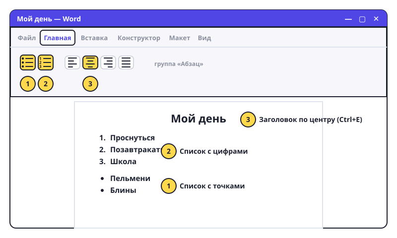

Списки и выравнивание
Список покупок, план доклада, правила игры — всё это удобно писать списком. А заголовок красиво смотрится по центру.

Списки
- Вкладка «Главная», группа «Абзац». Там две кнопки со списками: с точками (маркеры) и с цифрами (нумерация).
- Нажми кнопку с точками — появилась точка. Напиши первый пункт, нажми Enter — появится следующая точка.
- Чтобы закончить список — нажми Enter два раза подряд.
- Список с цифрами — так же, только кнопка с цифрами. Цифры считаются сами: удалишь пункт — остальные перенумеруются.
- Уже написал строки, а список хочешь? Выдели их и нажми кнопку списка.
Выравнивание
- Рядом четыре кнопки с полосками: по левому краю, по центру, по правому краю, по ширине.
- Поставь курсор в заголовок и нажми «по центру» (Ctrl+E). Заголовок встал посередине.
- Обычный текст оставь по левому краю (Ctrl+L) — так читать проще.
- Красная строка (отступ в начале абзаца): поставь курсор в начало абзаца и нажми Tab.
Попробуй сам: создай документ «Мой день». Заголовок по центру. Ниже — нумерованный список из 5 дел, которые ты делаешь за день. Потом — список с точками из 3 любимых блюд.
Точки — когда порядок не важен (что купить). Цифры — когда важен (что делать сначала, что потом).